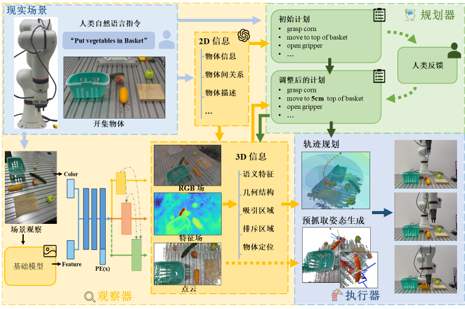
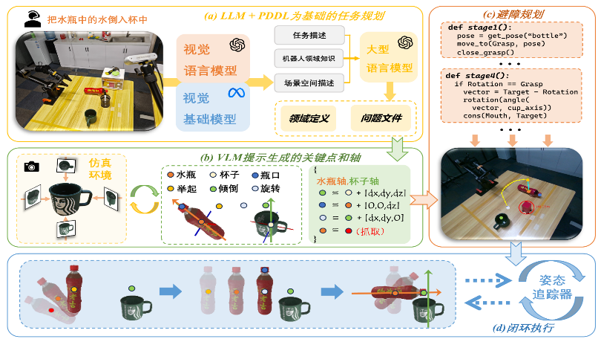
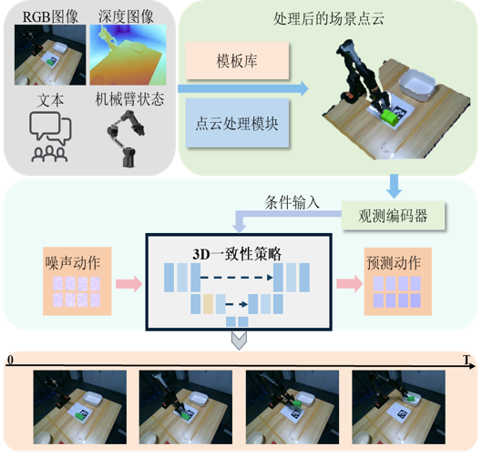

戎锦涛
Jintao Rong · 博士研究生
杭州 / 悉尼 · +86 15957107980 ·
jintaorong283@gmail.com ·
1501225407@qq.com
主页：euminds.github.io · Google Scholar · GitHub
主页：euminds.github.io · Google Scholar · GitHub

研究方向
计算机视觉、AIGC、参数高效微调（PEFT）、扩散模型、具身智能、模型压缩与神经网络结构搜索。
个人简介
浙江工业大学信息工程学院控制科学与工程博士研究生；国家留学基金委公派赴澳大利亚新南威尔士大学（UNSW Sydney）计算机科学与工程学院联合培养。 主要研究视觉提示学习、大语言模型 PEFT 与剪枝、运动可控视频扩散、AI 生成图像检测等方向。 导师：浙江工业大学欧林林教授、禹鑫燚教授；合作导师：浙江大学沈春华教授、陈昊教授；UNSW Dong Gong 教授。
教育经历
- 浙江工业大学，控制科学与工程，博士研究生，2019 年至今
信息工程学院 - 新南威尔士大学（UNSW Sydney），国家公派联合培养博士研究生，2024–2025
计算机科学与工程学院，导师：Dong Gong 教授 - 浙江工业大学，自动化，本科，2015–2019
信息工程学院
科研经历
- 浙江大学 CAD&CG 国家重点实验室，访问学生，2022 年 6 月至今
合作导师：沈春华教授、陈昊教授
荣誉与奖励
- 2026 — ICML 2026 Gold Reviewer（审稿人前 25%）
-
2023 — 国家留学基金委国家建设高水平大学公派研究生项目资助，赴 UNSW Sydney 联合培养

国家留学基金委贺信 -
2020 — 「华为杯」第二届中国研究生人工智能创新大赛国家三等奖及企业专项奖（作品：基于元学习的跨任务高效神经网络结构搜索）

国家三等奖 
华为企业专项奖
代表性论文
第一作者论文
When Distillation Breaks Motion Control: Restoring Generative Trajectories for Fast Video Generators
Retrieval-Enhanced Visual Prompt Learning for Few-shot Classification
Across-task Neural Architecture Search via Meta Learning
Soft Taylor Pruning for Accelerating Deep Convolutional Neural Networks
Learning Layer-wise Composable Textural Inversion Concepts for Text-to-Image Generation
合作论文
Exploring Spatial Intelligence from a Generative Perspective
MIMIC: Mask-Injected Manipulation Video Generation with Interaction Control
Hierarchical Planning with Object Keypoint-Axis Constraints for Robotic Manipulation
RealHD: A High-Quality Dataset for Robust Detection of State-of-the-Art AI-Generated Images
GSORB-SLAM: Gaussian Splatting SLAM Benefits from ORB Features and Transmittance Information
Improving Neural Indoor Surface Reconstruction with Mask-guided Adaptive Consistency Constraints
RepNAS: Searching for Efficient Re-parameterizing Blocks
Efficient Re-parameterization Operations Search for Easy-to-Deploy Network Based on Directional Evolutionary Strategy
Graph Pruning for Model Compression
实习与机器人研发经历
汇博机器人 · 杭擎智能
具身智能算法实习生（产学研合作）｜2025–2026
参与三项具身智能系统研发，将视觉、语言与三维观测转换为真实机器人可执行动作，分别解决开放三维场景规划、对象级操作约束和实时动作生成问题。

语义三维重建与任务规划
- 感知与建图：融合多视角 RGB-D 与开放词汇二维视觉特征，将语义蒸馏至 NeRF / 3D Gaussian 表示，构建兼具几何与语义的三维场景。
- 规划与执行：利用大语言模型分解用户目标，将目标位置、语言空间关系和障碍物转为三维代价地图，优化无碰撞六自由度轨迹。
- 动态更新：跟踪场景物体并更新三维表示与规划结果，形成“感知—规划—执行—反馈”的闭环 pipeline。

多模态任务导向机器人操作
- 任务规划：使用 VLM 识别对象及空间关系，由 LLM 生成 PDDL 问题描述，再通过符号规划器得到逻辑一致的动作序列。
- 几何约束：在对象局部坐标系中提取任务关键点与功能轴，将抓取位置、操作方向等语义转为显式约束，完成轨迹优化与闭环执行。
- 任务导向抓取：结合可供性推理筛选 GraspNet 候选，使抓取姿态服务于后续操作；相关成果已被 IEEE Robotics & Automation Magazine（RAM）录用。

三维感知驱动的实时动作生成
- 三维观测处理：从单目 RGB-D 中检测目标并估计六自由度位姿，利用姿态对齐的物体模板补全遮挡导致的残缺点云。
- 策略条件：联合编码补全后的场景点云与机器人本体状态，为动作策略提供几何一致的条件输入。
- 实时生成：将扩散教师蒸馏为三维一致性策略，以单次或极少次数前向计算生成动作序列，降低闭环控制中的策略推理延迟。
科研项目与深度合作
-
MotionEcho：蒸馏视频生成器的运动定制（2024–2026）
｜第一作者、主要研究工作
- 问题与分析：发现训练自由的运动控制方法在少步蒸馏模型上失效；从蒸馏改变去噪动力学、稀疏采样缺少密集中间状态两个角度定位原因。
- 方法设计：提出测试时蒸馏框架，以受限的高质量扩散教师校正学生采样轨迹；通过重加噪构造运动对齐端点，并以自适应调度控制教师介入时机与强度。
- 实验与产出：在多种蒸馏视频生成器上完成运动保真度、视觉质量与推理效率评测，在保留快速生成优势的同时提升参考运动复现能力；成果发表于 ECCV 2026。
-
RePrompt：检索增强的视觉提示学习（2022–2026）
｜第一作者、主要研究工作
- 问题与目标：针对 CLIP 在细粒度及跨域小样本任务中的领域差距，引入可复用的下游样本知识，增强提示学习的泛化能力。
- 方法设计：基于训练样本或外部数据构建检索库，将相似样本检索融入提示学习的多个阶段，使模型在推理时能够参考近邻样本；进一步分析检索对后层特征分布的改善作用。
- 实验与产出：负责跨图像、视频、多视图与域泛化任务的系统验证，覆盖 11 个图像数据集、3 个视频数据集、1 个多视图数据集和 4 个域泛化基准；成果发表于 IEEE TCSVT。
-
大语言模型 PEFT 与结构化剪枝（LoRAPrune）
｜深度合作
- 合作内容：围绕 LoRA 与大模型压缩的兼容性开展研究，使用 LoRA 权重及梯度估计结构重要性，避免保存预训练权重梯度带来的显存开销。
- 技术路线：将 LoRA 引导的重要性准则嵌入迭代剪枝流程，对冗余通道和注意力头进行结构化裁剪，并在 LLaMA 系列模型上验证精度、压缩率与显存效率。
- 结果：50% 压缩率下，相较 LLM-Pruner 在 WikiText2 / PTB 上分别降低 4.81 / 3.46 困惑度，同时减少 52.6% 显存使用；成果发表于 ACL 2024 Findings。
-
具身生成与空间智能（2025–2026）
｜跨团队深度合作
- MIMIC：围绕机器人操作视频生成中的交互控制开展合作，通过掩码注入表达操作对象与交互区域，研究动作过程的可控生成与时序一致性。
- GSI-Bench：参与从生成视角评估空间智能，围绕空间约束图像编辑、数据构建与模型评测开展协作；团队构建真实 / 合成双基准及统一评测协议，并验证生成训练对空间理解的增益。
- 机器人操作规划：参与基于物体关键点—轴约束的层级规划研究，以结构化几何约束连接高层任务规划与低层操作执行。
-
跨任务神经网络结构搜索与模型压缩（2019–2021）
｜第一作者及合作研究
- AT-NAS（第一作者）：将梯度元学习与进化式 NAS 结合，在任务分布上训练超网络及任务敏感元网络，使架构面对新任务时可用少量更新快速适配；将新任务搜索时间压缩至 1 小时以内。
- 结构重参数化：参与 RepNAS 搜索空间与单阶段搜索研究，在分支数约束下为不同网络层搜索可在部署时合并的多分支结构，兼顾训练表征能力与单路径推理效率。
- 剪枝与部署：开展 Soft Taylor 剪枝、图聚合剪枝等研究；通过跨层特征聚合、子网权重生成和压缩配置搜索，探索 CNN 精度、计算量与部署速度之间的平衡。